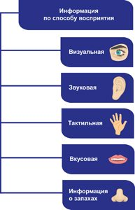
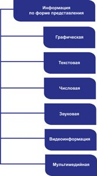
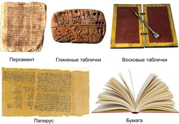
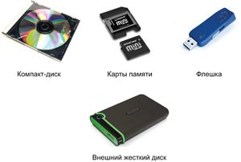
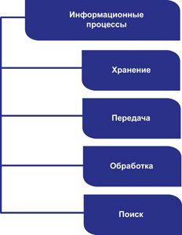
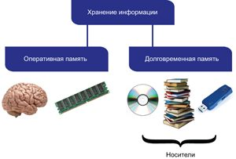
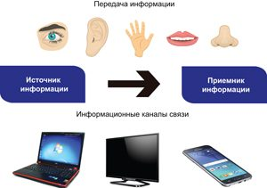
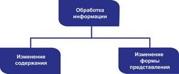
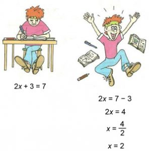
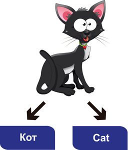

1.1. Виды информации
Каждый из нас не раз слышал слово «информация». Информацию мы получаем из книг, газет, Интернета, от людей, с которыми общаемся. А что же означает данное понятие?
Информация —
сведения о предметах, событиях, явлениях и процессах окружающего мира.
Большая часть
сведений, на основании которых формируется представление человека о мире, поступает к
нему благодаря органам чувств. Наличие зрения, слуха, осязания, вкуса, обоняния
позволяет нам получать знания об окружающей действительности. В зависимости от того, с
помощью каких органов чувств информация поступила к человеку, ее классифицируют по
способу восприятия (пример 1.1).
Визуальная информация воспринимается органами зрения (глазами), которые способны различать форму, объем, цвет, перемещение и изменение объектов.
Органы слуха (уши) воспринимают звуковую информацию. С их помощью можно распознавать звуки, различать их тембр, высоту, ритм, эмоциональную окраску.
Тактильная информация связана с органами осязания. Они позволяют на ощупь определить характер поверхности, ее температуру, почувствовать вибрацию, прикосновение.
С помощью органов вкуса человек получает вкусовую информацию о принимаемой пище: горькая, сладкая, кислая, соленая.
Орган обоняния (нос) осуществляет восприятие и распознавание информации о запахах.
Существует также классификация информации по форме представления (пример 1.2).
Графическая информация — сведения, представленные в виде рисунков, схем, чертежей, картин, фотографий.
Текстовая информация — сведения, представленные в виде специальных символов (букв различных алфавитов; иероглифов, с помощью которых записывают отдельные слоги или слова).
Числовая (цифровая) информация — сведения, отражающие количественную меру объектов и их свойств с помощью чисел и цифр.
Звуковая информация — сведения, представленные в виде звуков.
Существуют и комбинированные виды информации, такие как видеоинформация и мультимедийная информация.
Один и тот же вид информации может поступать и храниться в различной форме. Например, музыкальное произведение может храниться в виде аудио- или нотной записи.
Для преобразования информации из одного формата в другой используются различные алгоритмы и устройства.
1.2. Носители информации
Для записи, хранения и считывания информации используются носители информации. В древности человек сохранял важные сведения лишь в собственной памяти, т. е. память человека является естественным носителем информации. Потребность запоминать и хранить все возрастающие объемы информации привела к использованию и созданию различных материалов и устройств.
К носителям информации относятся бумага, книга, газета, фотография, магнитные и оптические диски, винчестер, флеш-память и др. (пример 1.3 и пример 1.4). В современном мире строят специальные здания — дата-центры, которые используются для обработки, хранения и распространения информации.
1.3. Информационные процессы
В повседневной жизни нам приходится записывать, запоминать и считывать полученную информацию. Человек может поделиться известной ему информацией с другими людьми. Кроме того, на основе обработки имеющейся информации можно создавать новую информацию.
Любая деятельность человека, связанная с информацией, является информационным процессом. Различают следующие информационные процессы: хранение, передача, обработка, поиск информации (пример 1.5).
Люди хранят информацию либо в собственной памяти, либо на каких-либо внешних носителях. Человек может забывать информацию. Информация на внешних носителях может храниться долго и быть доступна разным людям.
Передача информации происходит, к примеру, при разговоре двух людей, при чтении книги или журнала, при просмотре страниц в сети Интернет и др.
В процессе передачи всегда участвуют две стороны: источник и приемник. Передача информации всегда происходит через канал связи: звуковые волны при непосредственном разговоре, услуги почтового сервиса при переписке, сотовая связь при разговоре по мобильному телефону.
В результате изменения содержания или формы представления информации происходит ее обработка.
Содержание информации может измениться в результате вычислительных действий (примером может служить решение любой математической задачи). Процесс рассуждений человека тоже может приводить к появлению новой информации. Получению новой информации помогает исследование различных явлений природы, физических процессов и др.
Форма представления информации изменяется, например, при переводе текста с одного языка на другой, при рисовании картин по текстовому описанию или описании сюжета видеофильма в виде статьи в журнале.
Если человеку необходимо найти интересующие его сведения, то он осуществляет поиск информации. Для поиска нужной информации используются разнообразные способы и методы: чтение энциклопедий, словарей, книг и журналов, просмотр видеофильмов и телевизионных передач, поиск в сети Интернет и т. д.
С изученными информационными процессами вы можете познакомиться наглядно, рассмотрев пример 1.6.
|
Существует большое количество определений понятия «информация». Советский и российский ученый в области общей механики и прикладной математики академик Н. Н. Моисеев (1917—2000) считал, что «в силу широты этого понятия нет и не может быть строгого и достаточно универсального определения информации».
Интересным является высказывание Норберта Винера (1894—1964) — американского ученого, выдающегося математика и философа, основоположника кибернетики и теории искусственного интеллекта: «Информация — это не материя и не энергия, информация — это информация». |
| Пример 1.1
 Пример 1.2  |
| Пример 1.3. Древние носители информации
 Пример 1.4. Компьютерные носители информации  Пример 1.5.  Пример 1.6. Примеры информационных процессов    Изменение содержания информации  Изменение формы представления  Поиск информации |

1 Что понимается под информацией?
2 Как можно классифицировать информацию по способу ее восприятия человеком?
3 На какие виды можно разделить информацию по форме представления?
4 Выберите из списка носители информации.
5 Какие информационные процессы выполняет человек?

1 Какие информационные процессы выполняет семиклассник при следующих видах деятельности?
1. Запись в конспект материалов урока.
2. устный ответ у доски.
3. перевод текста с русского языка на английский.
4. подбор материалов для реферата по истории.
2 Приведите примеры профессий, в которых основная деятельность специалиста связана с информацией.
3 Опишите ситуации, в которых вы можете играть роль источника информации; приемника информации. Каким каналом связи вы пользуетесь при этом?
4 Подготовьте сообщение на одну из следующих тем:
1. «Древние носители информации».
2. «Электронные носители информации».
3. «История звукозаписывающих устройств».
4*. «Дополненная реальность как форма представления информации».